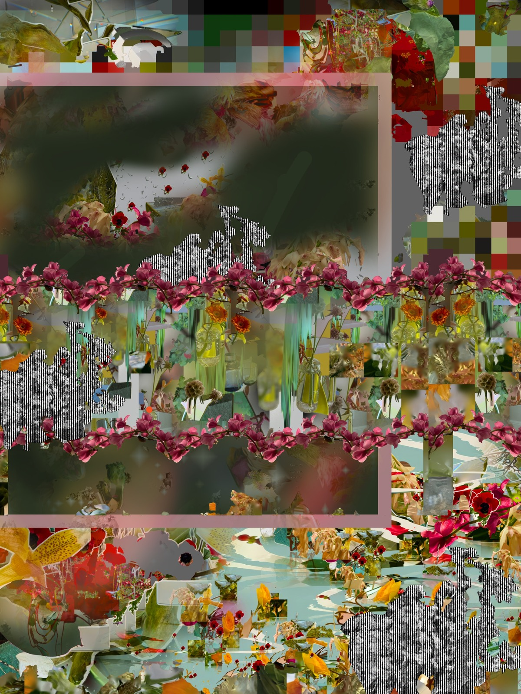
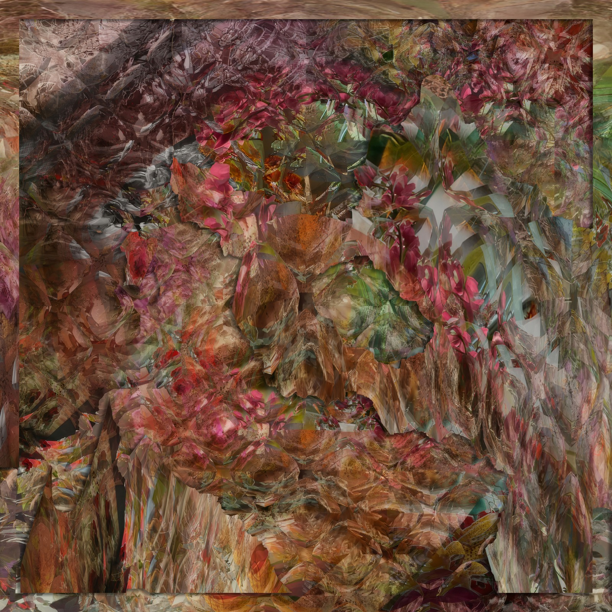

Katherine Frazer
Katherine Frazer is a product designer and artist with a multidisciplinary background spanning from new media art, software application design, accessible technologies, social therapy robotics, and Japanese floral arrangement. Frazer’s design practice focuses on helping others realize their creativity, working on popular consumer applications like Apple’s Keynote and Freeform, and software design tool Figma. Her artistic practice subverts these same tools by demonstrating that applications designed for work can also be spaces for beauty.
Frazer’s design work has been patented, and her artwork has been exhibited in Times Square and internationally, accessioned in Rhizome’s ArtBase, and featured in publications by Taschen and Phaidon. She was a panelist for The New Museum’s 2021 NFT Aesthetics panel, celebrating her as a pioneering digital artist in the web3 space. In 2025, she joined the board of Rhizome, a New Museum affiliated non-profit championing digital culture through commissions, exhibitions, and preservation.
Frazer graduated with degrees in Communication Design and Human-Computer Interaction from Carnegie Mellon University. She is based in Brooklyn, New York.

